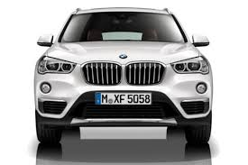

1.All applicants should download an application form and prepare relevant materials as required.
2.BMW Co., Ltd. will internally evaluate submitted materials to determine applicants’ eligibility, with those qualifying sent notices regarding interviews and on-site inspections.
3.BMW will visit applicants in the cities where they are located to conduct said interviews and on-site inspections.
4.BMW will internally evaluate the results of these interviews and inspections, later sending out final results to applicants.
5.BMW will invite the final candidates to Guangzhou to work out and sign a letter of intent.
1.All applicants must possess a legitimate business license and be legally independent individuals.
2.All applicants must be in good standing regarding performance and funding to prove that they can invest in the establishment of a BMW dealership outside of China.
3.All applicants must be able to provide a suitable site for the construction of a dealership.
4.All applicants must show full confidence in how to conduct BMW-related business and be willing to abide by all business policies and seek maintained, long-term common development with the group.
Requirements
1.In light of the difference in economic development and the size of the automotive market within various cities,BMW will establish standards regarding the construction of dealerships, and the required investment amount will also vary with each individual dealership on a case-by-case basis.
Scales

1.Dealer proceeds chiefly come from policy-based sales, repairs, and other relevant services.
2.The business policies of BMW will guarantee reasonable proceeds for every dealership, but the speed of returns for investments will mainly rely on the efforts made by the operator.
3.BMW will properly assist its dealers in establishing dealerships based on their actual situations.
ss
4.Note: after downloading an application form, please fill out all relevant information in the specified areas and send it to the email address provided below.
Investment Returns